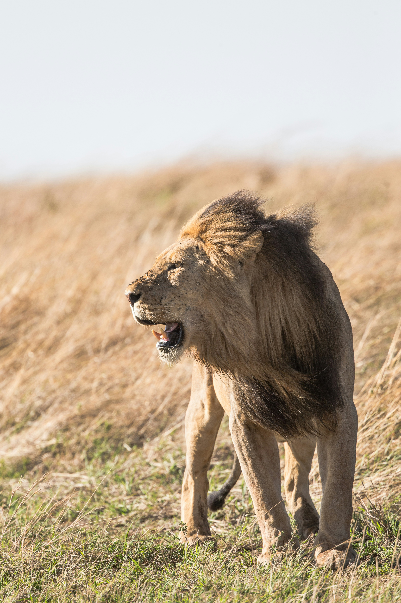

Curiosidades do reino Animal


- 
Raposas
As raposas são mamíferos onívoros que pertencem à família Canidae, a mesma dos cães e lobos. Elas possuem um corpo esguio, focinho longo e uma cauda espessa e peluda, que é uma de suas características mais marcantes.
Existem cerca de 40 espécies de raposas, mas apenas 12 são classificadas no gênero Vulpes, conhecidas como "raposas verdadeiras". A raposa vermelha é a mais comum e amplamente distribuída, sendo encontrada em várias partes do mundo.
Algo curioso sobre as raposas é o formato de suas pupilas ovais, que se assemelham às pupilas verticais dos gatos, ao invés do formato arredondado típico dos canídeos. Esse detalhe ajuda as raposas a enxergar melhor em condições de pouca luz, tornando-as caçadoras eficazes ao amanhecer e entardecer.
Além disso, as raposas são conhecidas por sua grande capacidade de adaptação. Elas vivem em diversos habitats, desde florestas densas até áreas urbanas. Apesar de sua dieta ser variada, as raposas são onívoras, alimentando-se tanto de pequenos animais quanto de frutas e vegetais.
Esquilos
Os esquilos são pequenos mamíferos roedores pertencentes à família Sciuridae. Eles são conhecidos por sua agilidade e cauda longa e peluda, que ajuda no equilíbrio ao se movimentarem rapidamente entre as árvores.
Existem mais de 200 espécies de esquilos, e eles podem ser encontrados em várias regiões do mundo, como florestas, parques urbanos e montanhas. As espécies mais comuns incluem o esquilo-vermelho e o esquilo-cinzento.
Uma característica interessante dos esquilos é sua habilidade de armazenar alimentos para o inverno. Eles enterram nozes e sementes no solo e possuem uma memória impressionante para localizar esses esconderijos mais tarde.
Embora sejam principalmente herbívoros, os esquilos também podem comer insetos e pequenos animais quando necessário. Sua dieta inclui frutas, sementes e cascas de árvores, sendo essenciais para a dispersão de sementes em diversos ecossistemas.
Urso
Os ursos são grandes mamíferos pertencentes à família Ursidae. São conhecidos por seu corpo robusto, pelagem densa e força impressionante. Os ursos habitam diversas regiões, incluindo florestas, montanhas e áreas geladas.
Existem oito espécies de ursos no mundo, sendo o urso-pardo e o urso-polar os mais conhecidos. Eles podem ser encontrados em várias partes do Hemisfério Norte e regiões remotas do Hemisfério Sul.
Curiosamente, os ursos possuem uma dieta variada, sendo classificados como onívoros. Dependendo da espécie, eles se alimentam de peixes, frutas, mel e até pequenos mamíferos. O urso-polar, por exemplo, é principalmente carnívoro.
Apesar de sua aparência pesada, os ursos são ágeis e bons nadadores. Algumas espécies, como o urso-negro, são também excelentes escaladores de árvores, usando suas habilidades para caçar e buscar alimentos.
Lobo
O lobo é um mamífero carnívoro que pertence à família Canidae, a mesma dos cães domésticos. Eles possuem um corpo esguio, cauda peluda e uma grande habilidade para caçar em grupo.
Existem várias espécies de lobos, sendo o lobo-cinzento o mais comum e amplamente distribuído. Eles habitam regiões como florestas, montanhas e tundras em diferentes partes do mundo.
Uma das principais características dos lobos é o seu comportamento social. Eles vivem e caçam em matilhas, onde cooperam para capturar presas maiores, como alces e bisões, além de pequenos mamíferos.
Os lobos têm uma hierarquia bem definida em suas matilhas, e são conhecidos por sua comunicação vocal através de uivos, que ajudam a coordenar caçadas e manter a coesão do grupo.
Macaco
Os macacos são primatas inteligentes que fazem parte da ordem dos primatas. Eles variam muito em tamanho e comportamento, sendo conhecidos por sua agilidade e habilidade de usar as mãos para segurar objetos.
Existem mais de 260 espécies de macacos, divididos em dois grandes grupos: os macacos do Novo Mundo (Américas) e os do Velho Mundo (África e Ásia). O macaco-prego e o babuíno são exemplos de espécies conhecidas.
Uma curiosidade interessante é que os macacos são animais extremamente sociais, vivendo em grupos e comunicando-se por vocalizações e gestos. Eles possuem uma dieta variada, incluindo frutas, sementes, insetos e até pequenos vertebrados.
Muitos macacos têm um polegar opositor, o que lhes permite agarrar e manipular objetos com facilidade, uma habilidade essencial para sua sobrevivência e adaptação em diferentes ambientes.
Leão
O leão é um dos maiores e mais icônicos felinos do mundo, pertencente à família Felidae. Ele é conhecido como o "Rei da Selva" por sua aparência majestosa e comportamento de liderança nas savanas africanas.
Os leões vivem em grupos chamados de "alcateias", que geralmente consistem em um macho dominante, várias fêmeas e seus filhotes. Eles são encontrados principalmente na África subsaariana, com uma pequena população também na Índia.
Uma característica marcante dos leões machos é sua juba, que é única entre os felinos e serve tanto para proteção quanto para intimidar adversários. Eles são carnívoros e caçam grandes presas, como zebras e gnus.
Os leões são predadores de topo e, apesar de sua aparência imponente, passam grande parte do dia descansando para conservar energia para caçadas em grupo, geralmente realizadas pelas fêmeas.